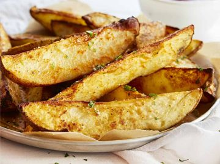

Back to Home
Baked Fries

Ingredients:
- Garlic Powder
- (optional)Creole Seasoning
- (pre-grounded or not) Pepper
- (Sea or otherwise) salt
- cooking oil (olive/canola/etc)
Steps
- turn on oven to 400-450f
- Wash potatoes
- cut into whatever portions you want
- throw into a bowl for mixing
- add oil, and stir potatoes
- add seasonings, then stir again
- once oven is pre-heated, put potatoes into baking medium, spray non-stick oil first optionally.
- check on food in 15 minutes to stir and make sure it is not sticking to the baking pan
- check on in another 15 minutes, if not done add anoter 10 minutes
- when done, serve